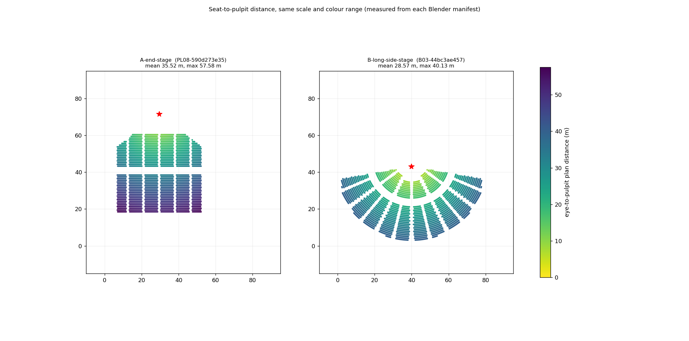
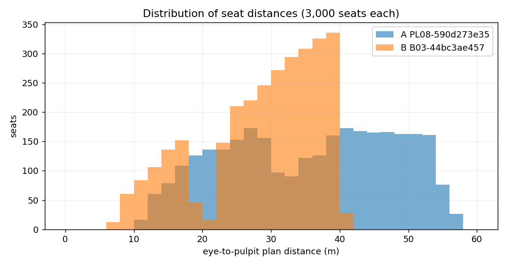
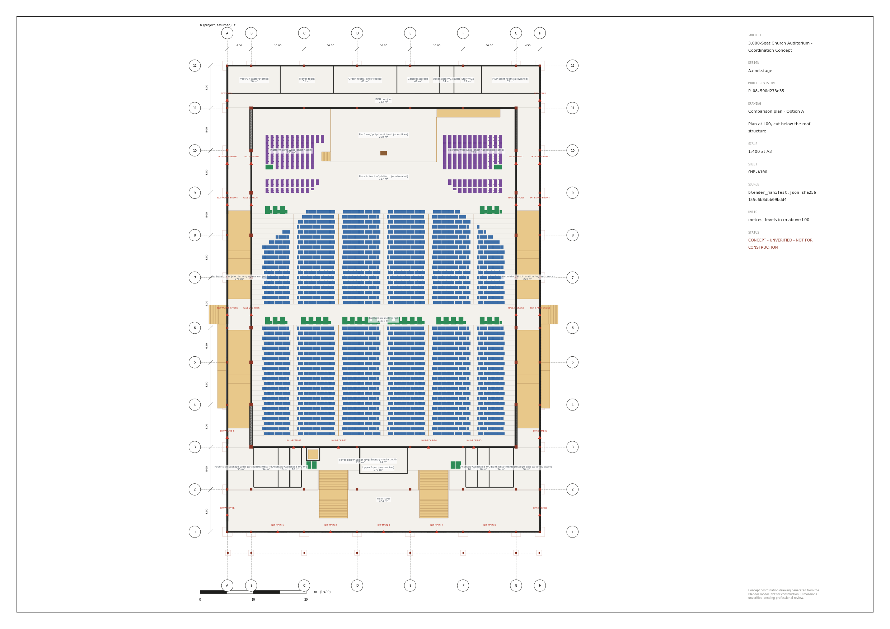
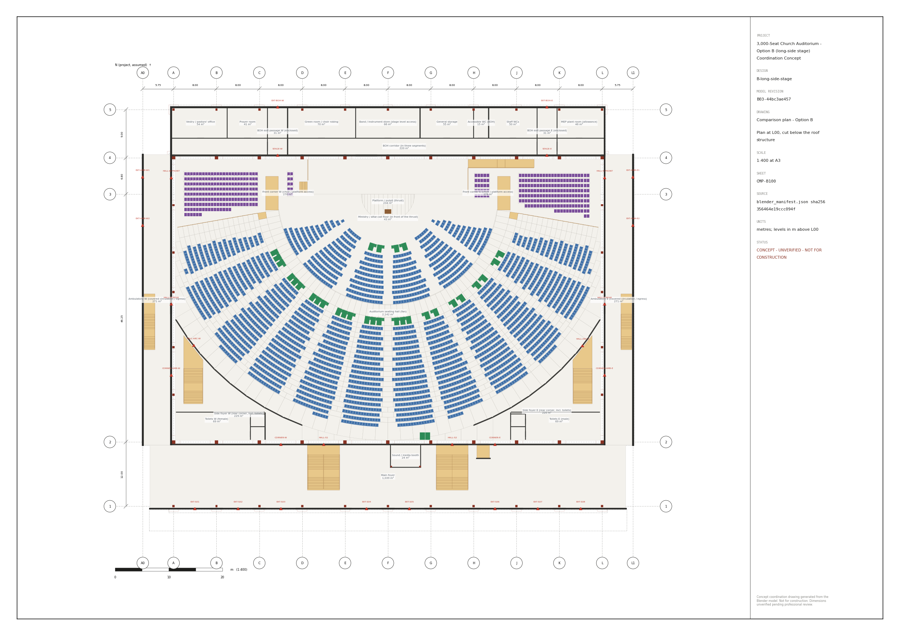
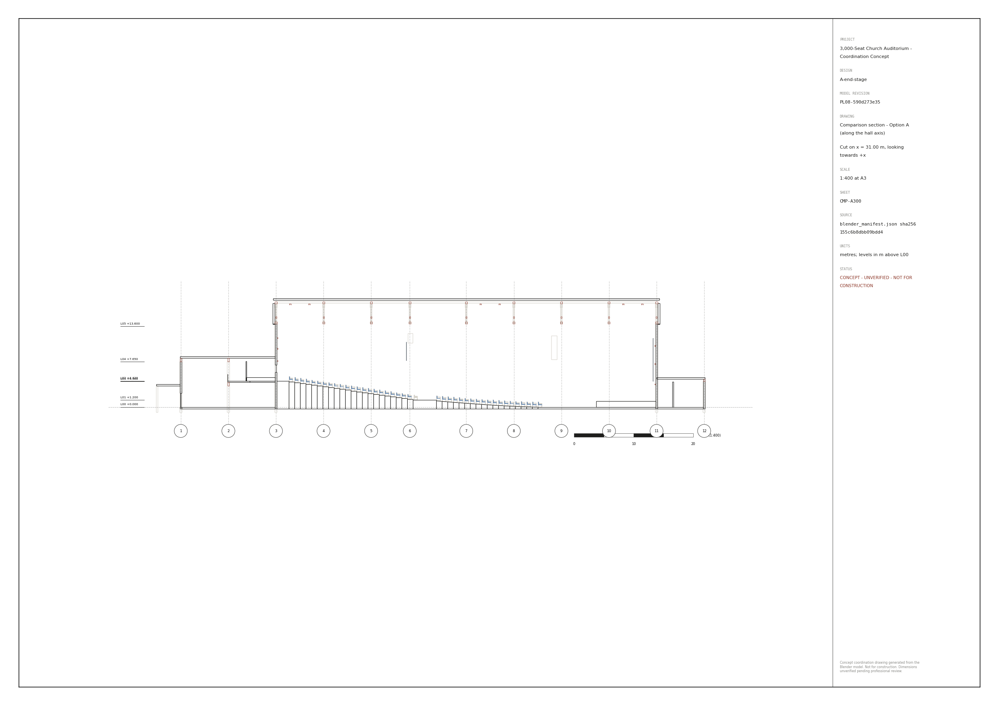
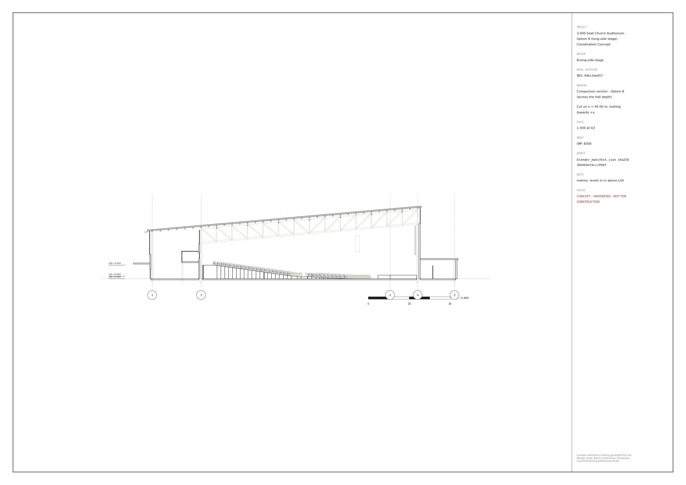

Option A (end stage, PL08-590d273e35) vs Option B (long-side stage, B03-44bc3ae457)

CONCEPT — UNVERIFIED · NOT FOR CONSTRUCTION
Generated by `comparisons/compare.py` from `designs/A-end-stage/model/blender_manifest.json` (PL08-590d273e35, sha256 155c6b8dbb09bdd4) and `designs/B-long-side-stage/model/blender_manifest.json` (B03-44bc3ae457, sha256 356464e19ccc094f). Every row except those marked 'own engine' / 'from chairs' is computed by the same code for both models. Concept models only - no cost rates, no code-compliance claim.
| Measure | Option A | Option B |
|---|---|---|
| Seats (CountsTowardTarget) | 3000 | 3000 |
| Rows | 41 | 32 |
| Pulpit distance mean (m) | 35.52 | 28.57 |
| Pulpit distance median (m) | 36.83 | 30.51 |
| Pulpit distance 90th pct (m) | 51.42 | 38.25 |
| Pulpit distance max (m) | 57.58 | 40.13 |
| Seats within 20 m of pulpit | 0.13 | 0.199 |
| Seats within 30 m of pulpit | 0.381 | 0.479 |
| Platform-edge distance max (m) | 52.88 | 38.17 |
| Head turn to pulpit mean (deg) | 20.5 | 4.0 |
| Head turn max (deg) | 52.5 | 18.6 |
| Seats with head turn > 30 deg | 670 | 0 |
| Max bearing from pulpit (deg) | 52.5 | 80.0 |
| Seats > 75 deg bearing (side-on) | 0 | 232 |
| Highest seat floor (m) | 4.28 | 3.325 |
| Footprint (m x m) | [59.3, 92.3] | [91.8, 79.55] |
| Footprint area (m2) | 5473.4 | 7302.7 |
| Space GFA (m2) | 5500.7 | 5874.5 |
| Hall floor area (m2) | 3165.9 | 2927.9 |
| Hall area per seat (m2) | 1.055 | 0.976 |
| Hall air volume (m3) | 49768.0 | 40190.0 |
| Hall volume per seat (m3) | 16.59 | 13.4 |
| Roof area, sloped (m2) | 5332.3 | 6844.1 |
| Roof top (m) | 18.4 | 17.78 |
| Trusses | 9 | 11 |
| Truss span (m) | 50.0 | 53.05 |
| Columns | 76 | 56 |
| Footing concrete (m3, pads) | 163.4 | 140.0 |
| Truss member length (m, count) | (1637.4, 369) | (2486.6, 627) |
| Purlin length (m, count) | (673.2, 88) | (2800.0, 350) |
| Measure | Option A | Option B |
|---|---|---|
| Bracing length (m, count) | (796.2, 88) | (1097.4, 100) |
| External wall area (m2) | 5824.0 | 5093.0 |
| Glazing (m2) | 9.6 | 159.9 |
| Hall exits / door width (m) | 10 / 28.8 | 10 / 40.8 |
| Final exits / door width (m) | 17 / 51.6 | 14 / 50.4 |
| Direct seat-to-exit max (m, same method) | 26.1 | 32.8 |
| Direct seat-to-exit mean (m) | 13.26 | 16.15 |
| Own-engine max in-hall travel, nearest exit (m) | 39.73 | 45.4 |
| Own-engine max in-hall travel, balanced (m) | 50.87 | 45.4 |
| Own-engine occupants > 30 m (balanced) | 490 | 535 |
| Own-engine max travel to outside (m) | 61.62 | 58.51 |
| Wheelchair spaces | 30 | 30 |
| Stairs / total risers | 5 / 72 | 7 / 120 |
| Ramps | 7 | 5 |
| Lifts | 1 | 1 |
| Choir chairs | 386 | 412 |
| Platform area (m2) | 200.0 | 234.1 |
| Screens | 6 | 3 |
| Min C-value n1 / n2 (from chairs) | 0.0603 / 0.1206 | 0.0602 / 0.1203 |





| Iteration | File | Revision | Scores | Critical blockers |
|---|---|---|---|---|
| iter-01 | A-architecture | PL08-590d273e35 | {"architecture": 6.0, "church_functionality": 5.5, "aesthetics": 4.0} | 0 |
| iter-01 | A-safety | PL08-590d273e35 | {"life_safety": 5.5, "accessibility": 7.0, "acoustics_av": 5.5} | 0 |
| iter-01 | A-structure | PL08-590d273e35 | {"structural_engineering": 7.0, "constructability_maintenance": 6.0, "cost_drivers": 6.5} | 0 |
| iter-01 | B-architecture | B01-5f175dba4d | {"architecture": 6.0, "church_functionality": 6.5, "aesthetics": 4.5} | 0 |
| iter-01 | B-safety | B01-5f175dba4d | {"life_safety": 3.0, "accessibility": 5.0, "acoustics_av": 5.5} | 1 |
| iter-01 | B-structure | B01-5f175dba4d | {"structural_engineering": 5.5, "constructability_maintenance": 6.0, "cost_drivers": 5.5} | 0 |
| iter-02 | B-architecture | B02-3c1014f7b9 | {"architecture": 6.2, "church_functionality": 6.8, "aesthetics": 4.5} | 0 |
| iter-02 | B-safety | B02-3c1014f7b9 | {"life_safety": 5.0, "accessibility": 6.5, "acoustics_av": 6.0} | 0 |
| iter-02 | B-structure | B02-3c1014f7b9 | {"structural_engineering": 6.5, "constructability_maintenance": 6.5, "cost_drivers": 5.5} | 0 |
| iter-03 | B-architecture | B03-44bc3ae457 | {"architecture": 6.3, "church_functionality": 7.2, "aesthetics": 5.0} | 0 |
| iter-03 | B-safety | B03-44bc3ae457 | {"life_safety": 5.5, "accessibility": 7.0, "acoustics_av": 6.5} | 0 |
| iter-03 | B-structure | B03-44bc3ae457 | {"structural_engineering": 7.0, "constructability_maintenance": 6.5, "cost_drivers": 5.0} | 0 |
Recommendation - which configuration merits detailed engineering development (2026-11-02)
Compared: Option A end stage PL08-590d273e35 (frozen baseline) and Option B long-side stage B03-44bc3ae457 (after three review iterations). All figures are measured from the two Blender manifests by comparisons/compare.py; review scores are QA metrics from three independent reviewers on one rubric, not engineering certification. Neither option met the acceptance bar (weighted score above 9.0 with no critical blockers): A 5.97, B 6.40, both with no critical blockers.
Recommendation: take Option B (long-side stage) forward to detailed design development, subject to the five gates below. If the client's binding constraint turns out to be capital cost or site area rather than the worship experience, Option A remains the lower-cost, more compact and simpler fallback, and should not be discarded.
Why B. The brief asked whether a wide, shallow room gives a better worship experience for 3,000 people. On the measured evidence it does, and the gain is built into the geometry, so A could never be revised to match it. Mean eye-to-pulpit distance falls from 35.5 m to 28.6 m and the farthest seat from 57.6 m to 40.1 m. Seats within 30 m of the pulpit rise from 38 % to about 48 %. No seat turns its head more than about 15 degrees to the pulpit, where A has 670 seats beyond 30 degrees. The rake top is 3.3 m instead of 4.3 m. The reviewers scored church functionality 7.2 for B against 5.5 for A, and B now leads on six of nine disciplines.
What B costs. Measured against A, B has 33 % more footprint (7,303 vs 5,473 m2), 28 % more roof (6,844 vs 5,332 m2), and about twice the linear roof steel (A's purlins are understated, so the real gap is smaller). Its truss span is not shorter (53 m vs 50 m). Two-thirds of its occupants leave by stairs from +3.3 m. Its straight-line seat-to-exit distances are longer (max 32.8 m vs 26.1 m), and 535 occupants exceed the 30 m in-hall travel flag against A's 490. Its altar-call floor is smaller (43 vs 117 m2), and 232 seats sit more than 75 degrees off the pulpit axis. These are the risks the next stage must close or accept knowingly.
Gates for B before detailed engineering: 1. Egress: add grade-level exits through the side walls at the feet of the cross-aisle ramps. Re-run egress on a proper route graph against the applicable Zimbabwean fire regulations (a fire engineer to confirm factors), and protect the back-of-house exit passages. 2. Cost: a quantity surveyor compares A and B on rates, including purlin optimisation for both. Proceed with B only if the cost premium is acceptable to the client. 3. Worship function: enlarge the ministry / altar-call floor to about 100 m2 by dropping one or two centre rows, and bring the choir tiers against the platform sides by moving the platform stair and ramp outboard. The client must confirm the choir facing the congregation, which departs from the Option A preference. 4. Structure: a structural engineer confirms the 53 m Pratt trusses (uplift restraint, splices and erection in Zimbabwe), the pinned rafter-to-truss connection, wind girts for the 13.5 m walls, and gutter access at +11.3 m. 5. Site: a survey and geotechnical report confirm that the larger footprint fits. A sloping site could lower the front of the hall and reduce the stair dependency.
Known documentation discrepancy (not fixed, because the review loop is closed): the B03 assumptions register still says "about 51 m span, 3.0 m deep, bearing +9.5"; the model has a 53.05 m span, 3.5 m depth and bearing about +12.3. The model and every measured table are correct.
Nothing in this study is construction-ready: member sizes, foundations, fire approval, acoustics, MEP and costs all remain to be done by qualified professionals.